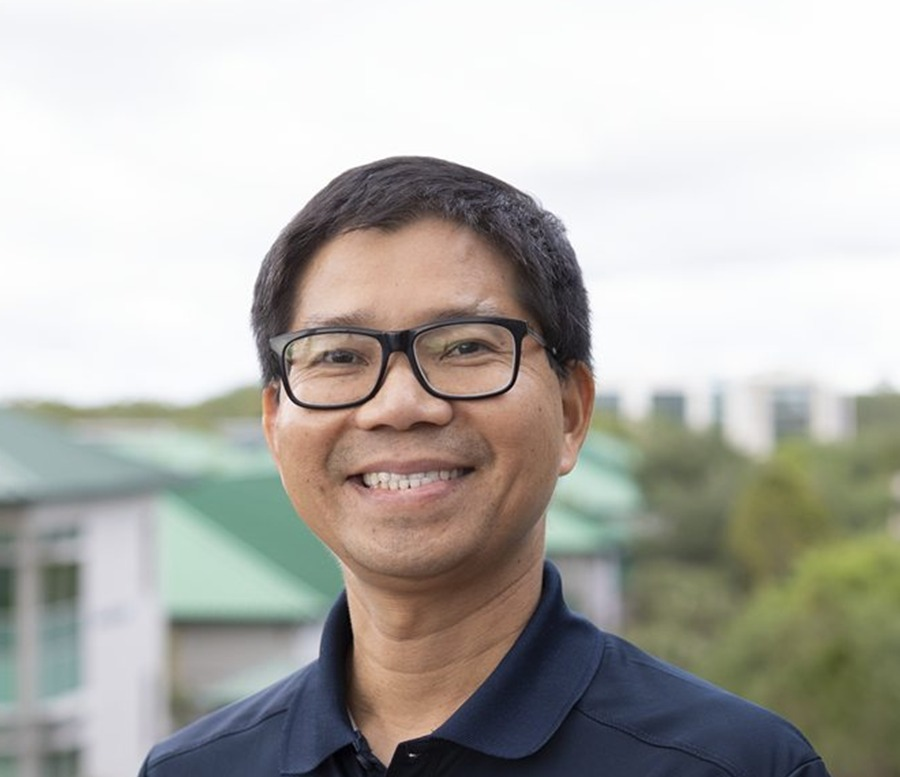

01
Construction & decisions
Project planning and controls, productivity, risk, and quantitative methods for more effective construction management.
Explore the researchEDUCATOR. RESEARCHER. ENGINEER.
I’m Dr. Long Nguyen, a construction management professor at FGCU. My interests include project planning, resilient infrastructure, and practical uses of AI in education and research.

Knowledge grows when we share it.
01 / ABOUT ME
I’m Professor and Chair of the Stock Development Department of Construction Management in FGCU’s U.A. Whitaker College of Engineering, and a California-registered professional engineer.
My background includes construction roles in the United States and Vietnam, research work in Hong Kong, and study in Vietnam, Thailand, and California. These experiences help me connect classroom discussions with questions from practice.
My teaching and research focus on project planning, quantitative methods, and infrastructure resilience. I’m also exploring how practical AI can support education and research.
My industry experience Faculty profile at FGCU02 / CONSTRUCTION INDUSTRY EXPERIENCE
Construction roles in the United States and Vietnam, with later project collaboration.
Deputy General Director
VietnamConstruction Manager
VietnamConstruction management and productivity analysis on an Integrated Gasification Combined Cycle (IGCC) power plant project.
EDUCATION & ACADEMIC WORK
03 / RESEARCH & TEACHING
My research considers practical questions in construction management, infrastructure, and education.
Project planning and controls, productivity, risk, and quantitative methods for more effective construction management.
Explore the researchInfrastructure lifelines, hurricane impacts, and data-driven approaches to understanding and managing the built environment.
Explore the researchPractical generative AI, educational case studies, and technology-enhanced learning in engineering and construction education.
Explore the researchSELECTED SCHOLARSHIP
Construction Innovation Infrastructure & machine learning
Journal of Civil Engineering Education, ASCE Engineering education
ASEE Annual Conference & Exposition AI & education
Journal of Construction Engineering and Management, ASCE Construction & decision support
ASEE Annual Conference & Exposition AI & education
ASCE Construction Research Congress Infrastructure resilience
Journal of Construction Engineering and Management, ASCE Construction & risk
Visit Google Scholar for the full publication record.
04 / INDEPENDENT PROJECTS
Two projects exploring practical uses of AI in learning, research, and professional practice.
Practical AI for Sustaining Education and Research
Connecting AI with engineering, management, education, research, and practice.
praiser.usSustaining Excellence with Super Intelligence

Exploring how human insight and AI can support learning, research, and the way we work.
sexsi.usOccasional videos and perspectives, in English and Vietnamese.
THE WORK IS ALWAYS ABOUT PEOPLE
Name tags and meeting papers are obscured for privacy.
A PROGRAM RESOURCE
Explore the program, experiential learning, industry engagement, and official resources.
05 / GET IN TOUCH
I welcome conversations about construction education, research, and practical AI.
Fort Myers, Florida